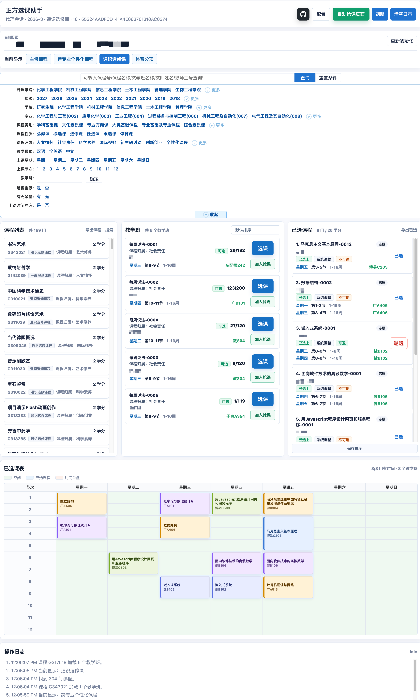
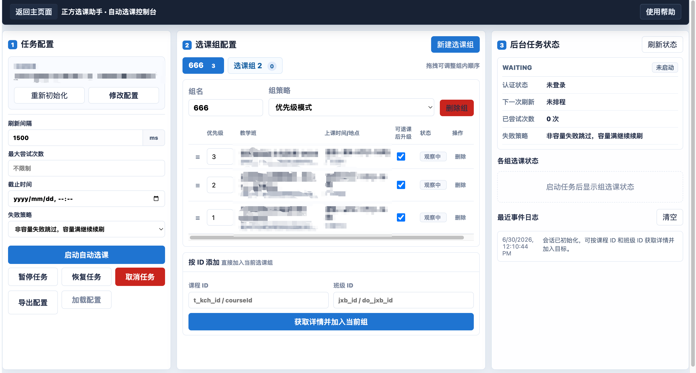

免责声明
本项目仅供学习、研究与技术交流使用，主要用于演示网络请求、流程自动化、界面交互等相关技术。开发者不鼓励、不支持任何违反学校规章制度、平台服务协议或相关法律法规的行为。
本项目为独立开发的非官方工具，与“正方软件股份有限公司”、相关高校、教务管理部门及其所属单位不存在隶属、合作、授权、认可或其他关联关系。文档中涉及的学校、系统或平台名称，仅用于说明适配对象或技术研究场景，不代表获得相关权利人的许可、认证或支持。
使用者应自行确认其使用行为符合所在学校、教务系统及相关平台的管理规定、使用协议及适用法律。因使用本项目产生的一切后果，包括但不限于账号异常、访问受限、数据丢失、选课失败、学业影响、纪律处分或其他直接、间接损失，均由使用者本人承担，与项目开发者无关。
本项目不保证功能持续可用、稳定、准确、完整、及时或适用于特定场景。教务系统接口、认证方式、访问策略、验证码机制、频率限制及校方政策可能随时调整，项目可能失效、异常或无法达到预期效果。
未经相关方明确授权，请勿将本项目用于批量请求、绕过系统限制、干扰平台正常运行、破坏公平选课秩序或其他不当用途。任何基于本项目进行的二次开发、部署、传播或商业化使用，其风险与责任均由使用者自行承担。
使用本项目即视为你已阅读、理解并同意本免责声明；如不同意，请立即停止使用并删除本项目相关内容。
zfxk 是一个面向正方选课系统的 Node.js SDK 与本地 Web 工作台。
它的核心方式不是模拟浏览器点击，也不依赖页面 DOM，而是基于：
来完成课程查询、教学班查询、已选快照、选课、退课、志愿排序以及自动选课后台任务。
本地 Web 工作台提供图形化操作界面：
界面预览：
|
 Web 工作台主界面 |
 自动选课控制台 |
自动选课任务运行在本地 Node 进程中。
启动 npm run web 后，即使关闭浏览器页面，只要 Node 服务仍在运行，后台任务会继续工作。
支持：
priority 优先级抢课。安装依赖并运行测试：
npm install
npm test
当前测试覆盖 SDK、登录、验证码、自动选课、Web API、导出、筛选和文档生成。
启动本地工作台：
npm run web
打开：
http://127.0.0.1:4173/
首次进入会跳转到 /setup 页面，需要填写：
| 配置项 | 说明 |
|---|---|
| Base URL | 教务系统根地址，例如 https://example.edu.cn/jwglxt |
| Path | 选课入口页路径，例如 /xsxk/zzxkyzb_cxZzxkYzbIndex.html?gnmkdm=N253512 |
| Cookie | 已登录 Cookie，可手动粘贴，也可通过登录流程获取 |
| 用户名 | 正方账号，用于登录和自动任务续期 |
| 密码 | 正方密码，用于登录和自动任务续期 |
建议使用用户密码（如果可用的话），避免自动抢课时 Cookie 过期。
保存配置后，主页面会自动初始化选课上下文。
浏览器只访问本地接口：
/api/proxy/*
/api/captcha/solve
/api/login/zfcaptcha
/api/auto-selection/*
真正访问学校系统的是本地 Node 代理，用于解决浏览器跨域和 Cookie 设置限制。
进入主页面后，系统会读取当前选课入口页隐藏字段，并加载课程类型。
你可以：
部分条件会在浏览器本地筛选以加速体验，例如：
需要后端实时判断的条件仍由学校系统处理，例如：
在教学班列表中点击操作按钮：
选课：调用 SDK 的 selection.choose()。退选：调用 SDK 的 selection.drop()。已选：表示当前教学班不可退或页面规则不允许退课。已选课程快照中的 canDrop 会按原正方页面逻辑计算，不只是读取单个字段。它会综合判断：
sfktkzntgpksfxkbj已选课程区域支持拖拽排序。
排序会调用正方志愿排序接口，只对普通志愿生效。权重 / 积分模式下的目标不会参与普通志愿排序。
点击 导出课程 可导出当前已加载课程的完整 JSON 信息。
导出时会：
点击 导出已选 可导出当前已选课程快照。
导出内容包含：
自动选课页面位于：
http://127.0.0.1:4173/auto-selection
自动选课任务只保存在当前 Node 进程内存中。停止 npm run web 后，运行中的任务会消失。
自动选课以“选课组”为单位。
一个任务可以包含多个选课组，每个选课组包含多个目标教学班，需要自行检查是否组内课程是否满足可选条件。
自动选课任务
├─ 选课组 A
│ ├─ 高优先级教学班
│ └─ 保底教学班
└─ 选课组 B
├─ 高优先级教学班
└─ 其他备选教学班
每个目标都有 priority。
数字越大，优先级越高。
例如：
| 教学班 | priority | 说明 |
|---|---|---|
| A1 | 100 | 最想选 |
| A2 | 80 | 次优 |
| A3 | 10 | 保底 |
自动任务会优先抢高优先级目标。
如果高优先级都不可选，但低优先级有余量，系统会先选低优先级目标作为占位。
当低优先级目标已经选上后，任务不会立刻结束。
如果之后发现更高优先级目标出现余量，系统会执行升级流程：
发现高优先级有余量
↓
检查当前保底是否允许自动退课
↓
退掉低优先级保底
↓
立即抢高优先级目标
↓
成功：更新当前占位
↓
失败：尝试恢复原保底
目标默认开启 allowAutoDrop。如果不希望系统为了升级自动退掉某个目标，可以在目标表格取消“允许自动退课升级”。
自动选课组支持两种策略：
| 策略 | 说明 |
|---|---|
| priority | 按优先级抢课。低优先级可保底，高优先级出现空位后尝试升级。 |
| equivalent | 组内任一目标选中即视为满足，不再追求升级。 |
自动任务采用明确目标刷新：
1500ms。2x、4x 递增退避，最高 16x 基础间隔；恢复成功后回到基础间隔。核心策略：
1. priority 高的先抢
2. 只刷目标列表，不全量刷课
3. 发现余量立即提交
4. 保存返回容量满就继续刷
5. 非容量原因失败就跳过该目标
6. 成功后刷新已选快照确认
任务状态包括：
| 状态 | 说明 |
|---|---|
| queued | 已创建，等待初始化 |
| running | 正在后台轮询 |
| paused | 需要人工处理 |
| succeeded | 所有选课组已满足 |
| failed | 所有目标失败或配置不可恢复 |
| cancelled | 用户取消 |
组选课状态包括：
| 状态 | 说明 |
|---|---|
| WATCHING | 正在监听目标 |
| PRECHECK | 发现更高优先级目标，准备升级 |
| DROP_BACKUP | 正在退当前保底 |
| CHOOSE_TARGET | 正在提交目标教学班 |
| RECOVER_BACKUP | 高优先级失败后恢复保底 |
| SELECTED | 当前组已有选中目标 |
自动任务默认采用保守策略。
以下情况会暂停任务或选课组，等待人工处理：
普通提示可以自动确认。
自动选课页面支持导出任务配置为 JSON 文件。
导出文件包含：
baseUrlpagePathusernameintervalMsmaxAttemptsdeadlineAtgroupstargets导出文件不包含密码、Cookie、运行中状态、事件日志或已选快照。
导出文件不会包含：
示例：
{
"version": 1,
"kind": "zfxk.autoSelectionTask",
"baseUrl": "https://example.edu.cn/jwglxt",
"pagePath": "/xsxk/zzxkyzb_cxZzxkYzbIndex.html?gnmkdm=N253512",
"username": "20230001",
"intervalMs": 1500,
"maxAttempts": null,
"deadlineAt": null,
"groups": [
{
"name": "体育课",
"strategy": "priority",
"targets": [
{
"courseId": "KC1",
"classId": "JXB_HIGH",
"submitClassId": "DO_HIGH",
"label": "高优先级教学班",
"courseType": {
"label": "通识选修课",
"kklxdm": "10",
"xkkzId": "KZ_GENERAL",
"njdmId": "2025",
"zyhId": "334",
"xkkzXh": "TAB_TOKEN"
},
"priority": 100,
"allowAutoDrop": true,
"skipAfterNonCapacityFailure": true
}
]
}
]
}
加载配置时：
import { createZfxkClient } from 'zfxk';
const client = createZfxkClient({
baseUrl: 'https://example.edu.cn/jwglxt',
auth: {
type: 'cookie',
cookie: process.env.ZFXK_COOKIE
},
mode: 'commit'
});
await client.bootstrapFromPage({
path: '/xsxk/zzxkyzb_cxZzxkYzbIndex.html?gnmkdm=N253512'
});
const courses = await client.catalog.searchCourses({
keyword: '数据库',
page: { start: 1, size: 20 }
});
console.log(courses);
const classes = await client.catalog.getTeachingClasses(courses[0].courseId);
const target = classes.find((item) => item.flags.canSelect);
const result = await client.selection.choose(
{
courseId: target.courseId,
classId: target.classId
},
{
confirm: async () => true,
chooseTextbooks: async ({ requiredItems }) =>
requiredItems.map((item) => item.id)
}
);
console.log(result.status);
const dropResult = await client.selection.drop({
courseId: target.courseId,
classId: target.classId
});
console.log(dropResult.status);
const snapshot = await client.chosen.snapshot();
console.log(snapshot.selectedCourses);
console.log(snapshot.selectedClasses);
loginWithZfCaptcha() 支持新版正方常见登录流程：
示例：
import { createZfxkClient, loginWithZfCaptcha } from 'zfxk';
const login = await loginWithZfCaptcha({
baseUrl: 'https://example.edu.cn/jwglxt',
username: process.env.ZFXK_USERNAME,
password: process.env.ZFXK_PASSWORD,
maxCaptchaAttempts: 3
});
const client = createZfxkClient({
baseUrl: 'https://example.edu.cn/jwglxt',
auth: {
type: 'cookie',
cookie: login.cookieHeader
},
mode: 'commit'
});
仅需要滑块流程 Cookie 时，可使用：
import { solveZfCaptcha, formatCookieHeader } from 'zfxk';
登录遇到交互式二次验证时，会返回明确错误码，例如：
SMS_LOGIN_REQUIREDIDENTITY_CONFIRMATION_REQUIREDACCOUNT_LOCKED生成 SDK 文档和 OpenAPI：
npm run docs
分别生成：
npm run openapi
npm run docs:api
输出：
| 文件 | 说明 |
|---|---|
docs/openapi.json |
OpenAPI 3.0.3 描述 |
docs/api/ |
TypeDoc API 文档 |
src/
auth/ 登录流程
captcha/ 滑块验证码流程
auto-selection/ 自动选课后台任务核心
client.js ZfxkClient
context.js 入口页隐藏字段解析
endpoints.js 正方接口端点
mappers.js 正方原始字段映射
normalizers.js flag / 状态归一化
services.js 课程、教学班、选课、退课等服务
web/
index.html 主工作台
app.js 主工作台逻辑
setup.html 配置页
setup.js 配置页逻辑
auto-selection.html 自动选课页
auto-selection.js 自动选课页逻辑
scripts/
serve-web.js 本地 Web/API 服务
generate-openapi.js OpenAPI 生成
test/
SDK、Web、自动选课、验证码、导出等测试
docs/
OpenAPI、TypeDoc 和设计文档
npm test
运行测试。
npm run web
启动本地 Web 工作台。
npm run docs
生成 OpenAPI 与 TypeDoc 文档。
仅在 正方教务管理系统 版本V-9.0 下经过测试。
本项目适用于个人本机环境下，对正方选课页进行：
不同学校的正方系统可能存在定制字段、定制端点或定制校验逻辑。遇到字段缺失、端点变化或上下文解析失败时，需要结合真实入口页和接口响应调整映射。
原始页面脚本样本不随仓库提交；需要核对端点名称、字段含义和 flag 语义时，请使用本机真实入口页和接口响应。
{kind=link}
{kind=link}